오늘은 ggplot2에서 더 적은 수의 컬러로 더 직관적인
시각화를 가능하게끔 해주는 4가지 방식에 대해 소개해보려고 합니다.
ggplot2를 바탕으로 진행되는 예제이긴 하나, 본 글에서 소개할
방식들에 담겨있는 아이디어는 언어, 시각화 라이브러리를 막론하고 적용이
가능할거라고 봅니다.물론, ggplot2만큼 짧고 가독성 좋은
코드로 구현이 가능할지는 미지수이지만요.😁 본 글에서
ggplot2의 그래프 문법 1이 갖는 강력한 힘을
확인하실 수 있을 겁니다.
대중들은 말이 아닌 그림을 기억합니다. 그래서, 잘 만들어진 데이터 시각화는 강력한 힘을 갖습니다. 종종 데이터 시각화를 하시다가 지나치게 많은 색을 사용하게 되어 오히려 전달력이 떨어진다는 느낌을 받은 적이 있지 않으신가요? 그렇다면 이 글이 도움이 되실 수도 있겠습니다.😀
준비하기
본격적인 시작 전 몇 가지 준비를 하고자 합니다.
ggplot2에서 제공하는 다양한 테마 중
theme_minimal()을 사용할 예정이고, 폰트, 그림 제목과 색
등에 몇 가지 조정을 줄 예정입니다:
showtext패키지를 통해 Fira Sans font 설정그림 제목은 기본 좌측 정렬, 색맹(color-blind)까지 고려한 Okabe Ito 컬러 팔레트 사용
- 본 글의 작성에 참고한 원 글의 저자는 Fundamentals of Data Visualization by Claus Wilke를 읽은 뒤, Okabe Ito 컬러 팔레트를 선호하게 되었다고 합니다.
library(tidyverse)
library(showtext)
font_add_google("Fira Sans", "firasans")
showtext_auto()
theme_customs <- theme(
text = element_text(family = 'firasans', size = 16),
plot.title.position = 'plot',
plot.title = element_text(
face = 'bold',
colour = thematic::okabe_ito(8)[6],
margin = margin(t = 2, r = 0, b = 7, l = 0, unit = "mm")
)
)
theme_set(theme_minimal() + theme_customs)음영을 활용하자
ggplot2 패키지에서 제공하는 mpg 데이터셋을
이용해 연도별 자동차 종류의 빈도를 시각화해봅시다. 전에 충분히
보셨을만한 데이터라 생각해서, 데이터셋에 관한 설명은 스킵하겠습니다.
이런 방식으로 시각화를 해보신 경험이 있으실겁니다:
자동차 종류가 많다보니 무려 7개의 컬러를 시각화에 사용하였습니다. 이
그림이 틀렸다고 할 수는 없습니다. 다만, 좋은 시각화라고 할 수 있는지에
대해 한 번 생각해보자는 겁니다. 제가 보기에 이렇게나 많은 수의 컬러를
사용하는 시각화는 꽤나 정신없어 보인다고 느껴집니다.여러 수준을 갖는
범주형 변수에 관한 컬러링에 있어서 더 적은, 최대 3개 정도의 컬러만
사용하여 시각화를 수행하는 방법은 없을까요? 이제 그 아이디어를
소개하고자 합니다. 자동차 종류를 구분하기 위해 색조(hues) 뿐만이 아닌,
음영(shades)을 활용하는 것이죠. 3가지 컬러만을 사용해 투명도를 줌으로써
7개의 자동차 종류를 구분해보겠습니다. 미리 말씀드리자면,
minivan을 단독 하나의 그룹으로 설정해주어 이를 중심으로
투명도가 줄어들고 늘어나게끔 만드는 것이 키 아이디어입니다.
이를 위해서는 우선 데이터에 자동차의 종류를 3가지로 구분짓는 새로운 그룹 변수를 생성해주어야 합니다:
이를 바탕으로 우선 먼저 시각화를 해보죠:
shades_plt <- dat |>
ggplot(aes(x = year, fill = class_group, alpha = class)) +
geom_bar() +
labs(
x = 'Year',
y = 'Counts',
alpha = 'Class',
title = 'Show shades, not hues'
)
shades_plt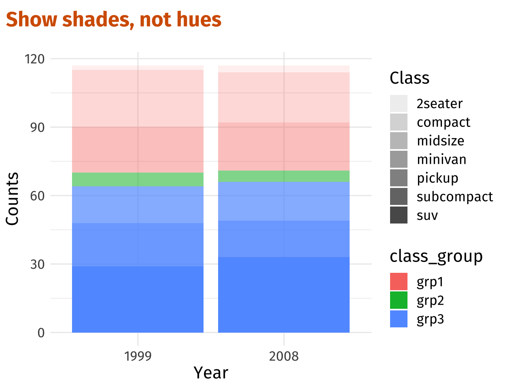
색조와 음영까지 활용해 3가지 컬러정도로 줄이긴 했지만, 아직 전달력은
매우 떨어집니다. 우리 눈으로 색조와 음영을 조합해 그림의 자동차 종류를
구분해내는 것은 꽤 어렵죠. 투명도와 색상을 직접 조정해보겠습니다.
투명도는 suv -> minivan까지 점차 줄어들고,
minvan 이후부터는 다시 줄어든 양만큼 투명도가 늘어나도록
설정을 해주려고 합니다:
# Color-blind safe colors
colors <- thematic::okabe_ito(3)
# Possible levels of transparency (one for each class)
alpha_max <- 1
alpha_min <- 0.7
alpha_vals <- c(
seq(alpha_max, alpha_min, length.out = 4),
seq(alpha_min, alpha_max, length.out = 4)[-1]
)
alpha_vals[1] 1.0 0.9 0.8 0.7 0.8 0.9 1.0# Tweak previous plot
shades_plt <- shades_plt +
scale_fill_manual(values = colors) +
scale_alpha_manual(values = alpha_vals)
shades_plt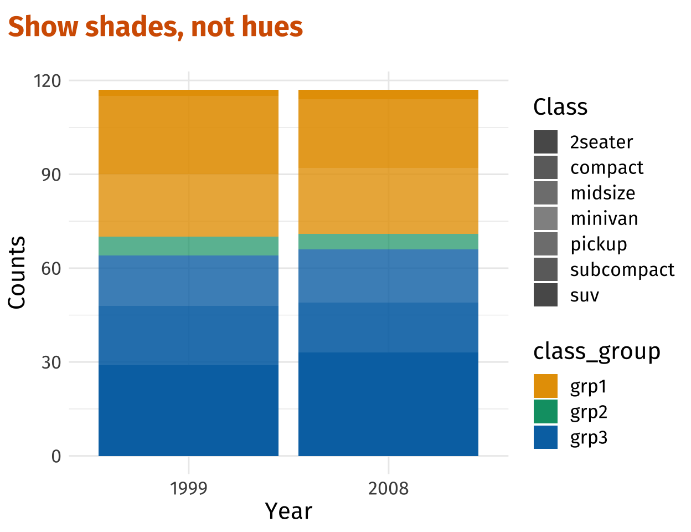
아까보다는 좀 낫습니다. 여기서 좀 더 개선을 해보자구요. 우측 범례를
하나로 좀 통합해서 설정하면 좋을 것 같은데요. 7개로 구분되어 있는
투명도에 컬러를 입혀줘서 말이죠. 꽤나 어려운 작업일 것 같지만,
ggplot2에서는 아주 손쉬운 작업입니다. guides()
함수를 통해 가능합니다. fill에 관한
범례(class_group)는 삭제를 한 뒤에,
guide_legend()를 통해 alpha에 관한 범례에
fill의 색상을 가져와 우리가 사전에 설정한 각각 3개
그룹(class_group)의 컬러를 덮어씌워(override) 줄겁니다.
말이 조금 복잡해보이지만, 코드를 보면 더 쉽게 이해하실 수 있습니다:
shades_plt <- shades_plt +
guides(
fill = guide_none(),
alpha = guide_legend(
override.aes = list(fill = colors[c(1, 1, 1, 2, 3, 3, 3)]
)
)
)
shades_plt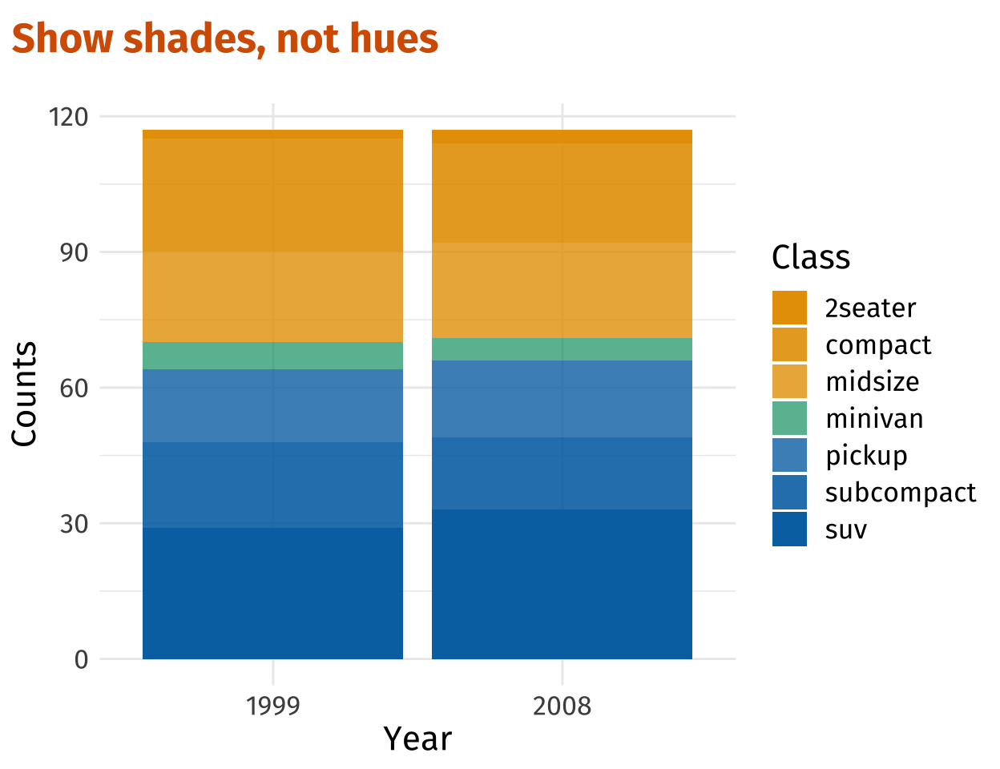
음영만으로는 부족해
충분히 괜찮은 시각화를 했지만, 아쉬운 부분이 하나 있습니다. 인접한
컬러 블록들에서는 자동차 종류 구분이 쪼~금 불편해 보입니다. 이 문제 또한
손쉽게 해결해줄 수 있어요. 블록마다 선 하나씩만 그어주면 말이죠. 앞선
시각화 코드에 geom_bar() 한 줄이면 해결할 수 있습니다. 이
또한 그래프 문법의 힘이죠.😄
dat |>
ggplot(aes(x = year, fill = class_group, alpha = class)) +
geom_bar(col = 'white') + # Add lines for distinction
scale_fill_manual(values = colors) +
scale_alpha_manual(values = alpha_vals) +
guides(
fill = guide_none(),
alpha = guide_legend(override.aes = list(fill = colors[c(1, 1, 1, 2, 3, 3, 3)]))
) +
labs(
x = 'Year',
y = 'Counts',
alpha = 'Class',
title = 'Group categories together by color, \nbut keep showing them'
)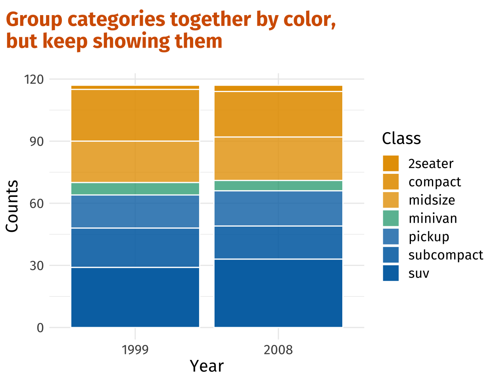
전달하고 싶은 내용만 강조하자
이제 조금 다른 이야기를 해보려고 합니다. 꼭 위와 같이 모든 범주에 대해 컬러를 줄 필요는 없는 상황도 있지 않을까요? 예를 들자면, 우리가 시각화를 통해 꼭 강조해서 전달하고 싶은 내용이 있을 때처럼요. 이번에 사용할 예시 데이터는 흥미로운 다양한 데이터셋을 제공해주는 Our World in Data에서 가져왔습니다. 미국인들을 대상으로 설문조사를 수행한 자료인데요. 본 자료를 통해 우리가 알아보고자 하는 바는 “우리는 과연 일생동안 누구와 시간을 많이 보내는가?”입니다. 여러 나이대의 미국인들을 대상으로 하루에 평균적으로 누구와 얼마나 시간을 보내는지에 대해 조사한 자료라고 할 수 있겠습니다. 위 링크의 차트에 아래 우측 탭을 보시면 Download를 눌러서 데이터를 받으실 수 있습니다:
이 자료를 바탕으로 다음과 같은 그림을 그려볼 수 있습니다. 과연 나이에 따라 우리가 시간을 함께 보내는 대상은 어떤 식의 패턴을 보이며 변화할까요? 일반적으로는 다음과 같이 시각화를
# Some data wrangling
time_data <- read_csv("./time-spent-with-relationships-by-age-us.csv") |>
rename_with(
~c('Entitity', 'Code', 'Age', 'alone', 'friends', 'children', 'parents',
'partner', 'coworkers')
) |>
pivot_longer(
cols = alone:coworkers,
names_to = 'person',
values_to = 'minutes'
) |>
janitor::clean_names() |>
filter(age <= 80)
# Color-blind safe colors
colors <- thematic::okabe_ito(7)[-6]
# Line plot
p <- time_data |>
ggplot(aes(x = age, y = minutes, col = person)) +
geom_line(size = 1.5) +
scale_color_manual(values = colors) +
coord_cartesian(xlim = c(15, 81), expand = F) +
scale_y_continuous(minor_breaks = NULL) +
labs(x = 'Age (in years)', y = 'Minutes', col = 'Time spent')
p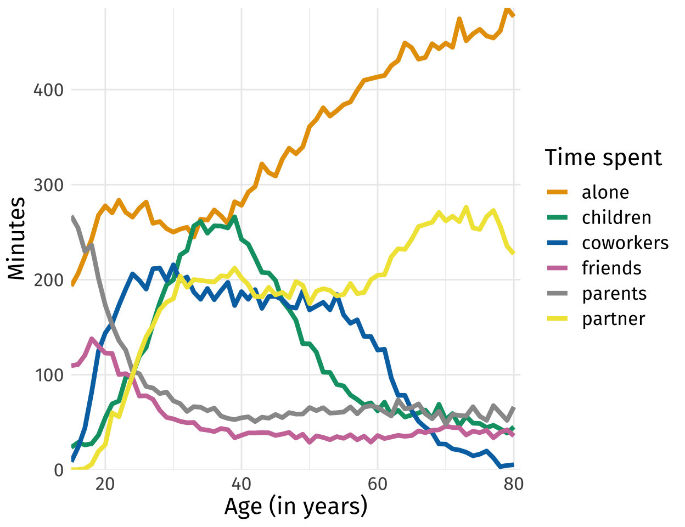
보통 이렇게들 시각화하곤 하죠. 이런 종류의 그림은 스파게티 플롯(spaghetti plot)이라고 표현하기도 합니다. 우리는 또 수많은 컬러에 직면했습니다. 아울러, 이 그림 한 장만 놓고 봤을때는 무슨 말을 전달하고자 하는지 파악하기가 참 힘듭니다. 제 눈엔 우선 2가지 인사이트가 보입니다:
- 우리는 일생동안 혼자서 가장 많은 시간을 보내게 된다.
- 40대 즈음해서 아이와 보내는 시간은 줄어들면서, 혼자 보내는 시간이 많아진다.
이와 같이 만약 우리가 전달하고자 하는 인사이트가 확실한 상태라면,
중요한 부분만 강조함으로써 이 지저분한 스파게티 플롯을 전달력 있는
깔끔한 스파게티 플롯으로 만들어 줄 수 있습니다.
ggplothighlight 패키지가 그 해결책이 되어줍니다. 패키지
안의 ggplothighlight() 함수를 이용해 레이어를 하나더
얹어서, 필터링을 해줄 수 있어요. 아주 편리한 패키지죠. 특정 조건을
만족하지 않는 데이터 포인트는 모조리 회색으로 표현이 됩니다. 먼저 첫
번째 인사이트를 그림으로 표현해봅시다. 코드 1줄 정도만 추가해주면
가능합니다.
library(gghighlight)
alone_plt <- p +
gghighlight(person == 'alone', use_direct_label = F) +
labs(title = 'Emphasize just one or a few categories')
alone_plt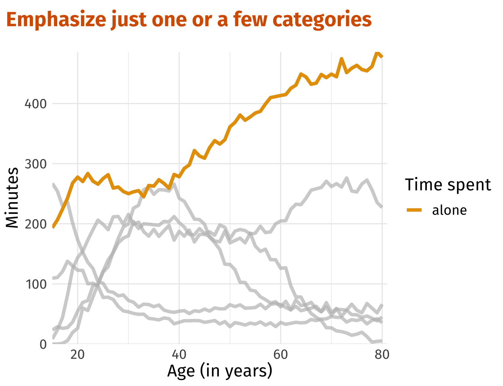
이 그림에 텍스트를 추가하여 우리가 하고싶은 이야기를 좀 더 강조할 수도 있습니다:
alone_plt +
annotate(
'text',
x = 15,
y = 455,
label = 'We spend a lot of time alone...',
hjust = 0,
vjust = 0,
family = 'firasans',
size = 7
)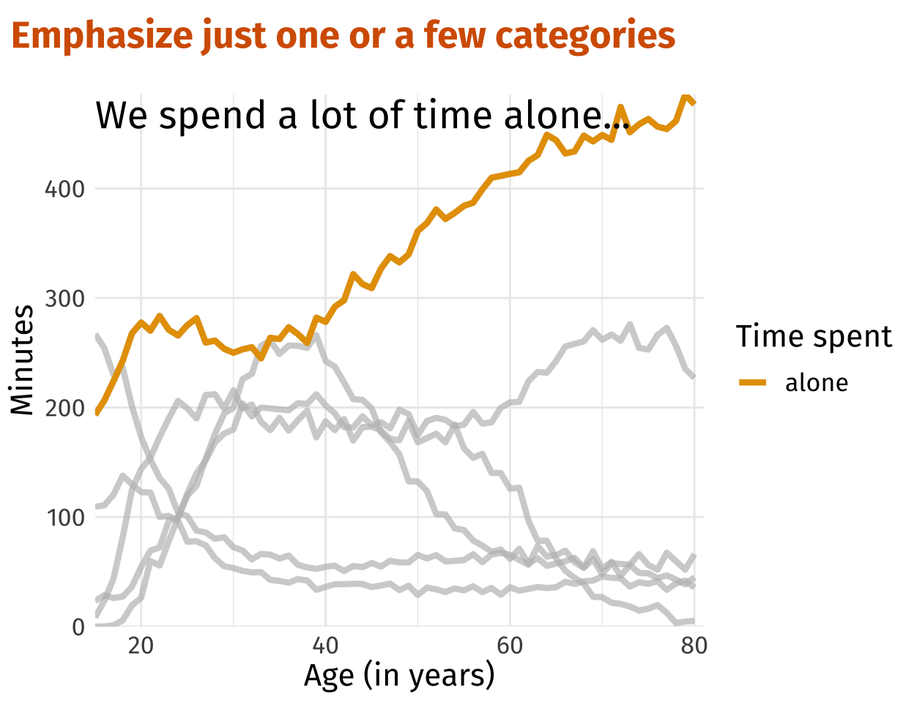
하고 싶은 이야기가 하나가 아니라 여러개라면 어떤 방법이 있을까요?
전혀 문제가 되지 않습니다.😀 gghighlight()를 사용해 그저
여러 조건 넣어주기만 하면 됩니다.
age_40_plt <- p +
gghighlight(
person %in% c('alone', 'children'),
age >= 38,
use_direct_label = F
) +
geom_segment(x = 38, xend = 38, y = -Inf, yend = 300, linetype = 2, col = 'grey20') +
labs(title = 'Emphasize just one or a few categories')
age_40_plt +
annotate(
'text',
x = 15,
y = 403,
label = 'Around the age of 40, we spend \nless time with children and \nmore time alone.',
hjust = 0,
vjust = 0,
family = 'firasans',
lineheight = 0.85,
size = 5.5
)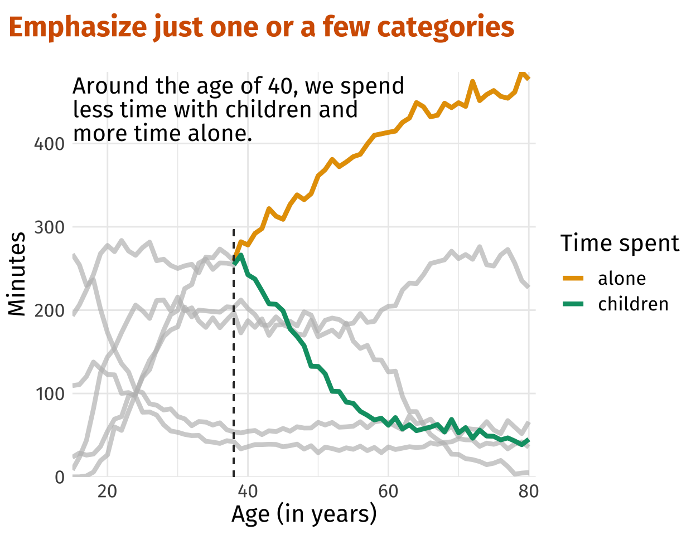
라벨링 활용하기
앞서 본 모든 그림들에서는 그림의 이해를 돕기위한 범례(legend)가
우측에 자리하고 있었습니다. 범례는 그림에서 꽤나 큰 공간을 차지합니다.
아울러, 범례는 그림에 집중도를 떨어뜨릴 수 있죠. 그림의 이해를 위해서는
필연적으로 범례와 그림을 번갈아가며 봐야하니까요. 이 문제를 해결할
방법은 없을까요? 범례를 없애고 그림에 라벨링을 통해 우리가 하고자 하는
이야기를 전달하면 어떨까요? 싱글 레이블에 대해서는
annotate(), 다중 레이블에 대해서는
geom_text()를 이용해 라벨링을 하면 되는데요. 우선
annotate()를 활용해 스파게티 플롯 예제를 개선시켜
보겠습니다:
alone_plt +
annotate(
'text',
x = 15,
y = 455,
label = 'We spend a lot of time alone...',
hjust = 0,
vjust = 0,
family = 'firasans',
size = 7
) +
annotate(
'text',
x = 70,
y = 420,
label = 'alone',
hjust = 0,
vjust = 0,
size = 7,
family = 'firasans',
color = colors[1]
) +
labs(title = 'Label directly') +
theme(legend.position = 'none')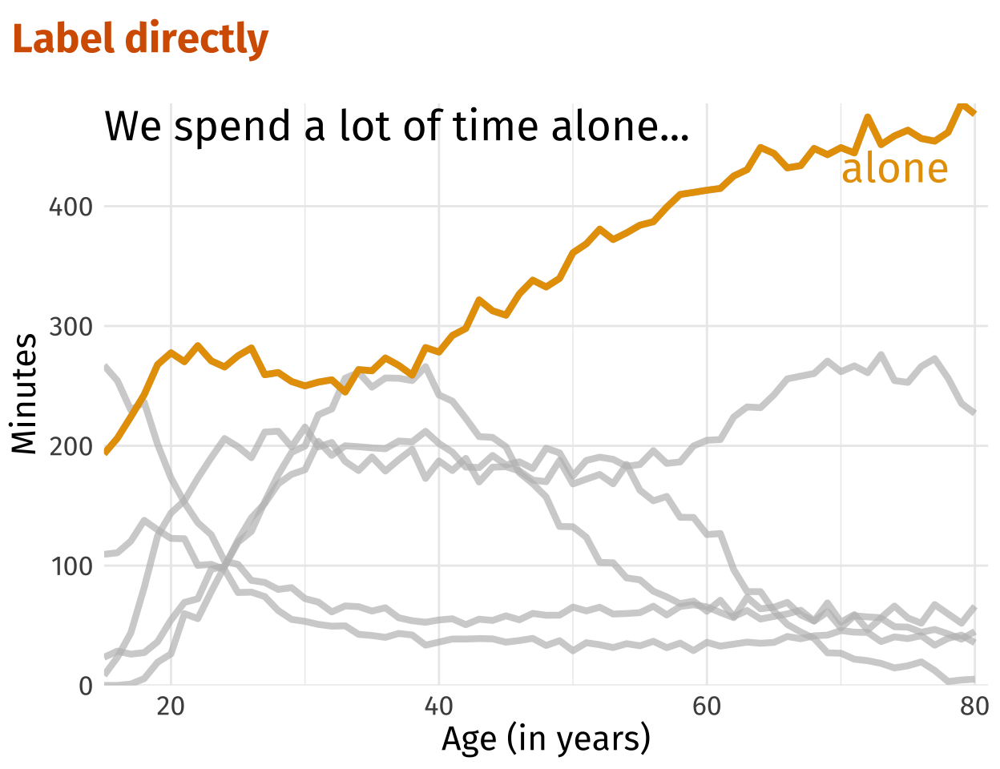
이러한 방식으로 공간도 세이브하고, 그림에 집중도도 훨씬 높혀줄 수 있죠. 범례와 플롯을 눈으로 왔다갔다 할 필요도 없고요. 여기서 조금 더 개선을 해볼까요? 현재 위 그림에는 alone이라는 단어가 중복으로 들어가있죠. 강조한 선 아래 alone을 없애고 선과 동일한 색상을 좌측 문장의 alone에 넣어주는 것은 어떨까요? 더 매력적인 시각화가 될 것만 같다는 생각이 들지 않나요?
이를 위해서는 ggtext 패키지를 활용해 HTML 문법을
이용해야합니다. annotation()의 text geom을
richtext geom으로 바꾸고, 우리가 컬러를 반영하고자 하는
텍스트에 대해서는 HTML 코드를 포함하는 문자열을 만들어 주는 과정이
필요합니다. 말이 좀 복잡해보이지만, 코드는 꽤 간단합니다:
library(ggtext)
color_alone <- glue::glue(
"We spend a lot of time <span style = 'color:{colors[1]};'>alone</span>..."
)
color_aloneWe spend a lot of time <span style = 'color:#E69F00;'>alone</span>...alone_plt +
labs(title = 'Label directly') +
annotate(
'richtext',
x = 15,
y = 400,
label = color_alone,
hjust = 0,
vjust = 0,
family = 'firasans',
size = 6,
label.color = NA
) +
theme(legend.position = 'none')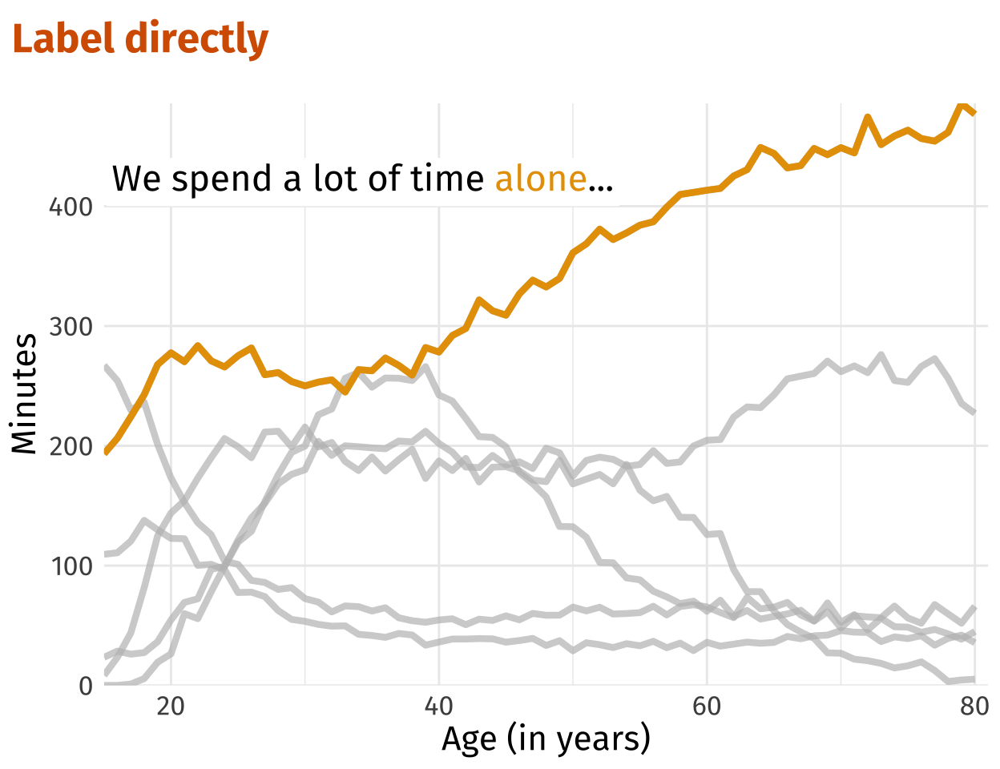
멋지지 않습니까? HTML 문법에 익숙하지 않은 분들은 컬러링을 넣어주는 형태를 기억하시기 바랍니다. 이런 식으로 직접적으로 라벨링 하는 방식은 스파게티 플롯 예제의 두 번째 인사이트를 나타내는 그림에 대해서도 손쉽게 적용이 가능합니다.
age_40_text <- glue::glue(
"Around the age of 40, we spent <br> less time with
<span style = 'color:{colors[2]};'>children</span>
and <br> more time <span style = 'color:{colors[1]};'>alone</span>."
)
age_40_plt +
labs(title = 'Label directly') +
annotate(
'richtext',
x = 15,
y = 350,
label = age_40_text,
hjust = 0,
vjust = 0,
family = 'firasans',
lineheight = 1.25,
size = 5,
label.color = NA
) +
theme(legend.position = 'none')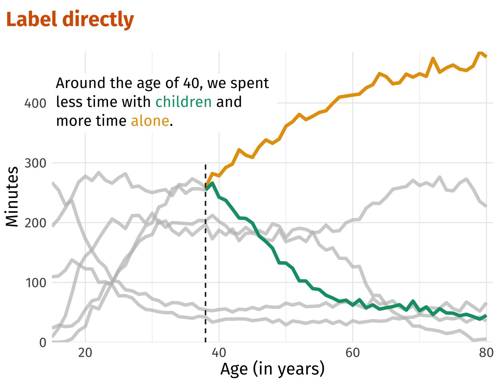
이런 완성도 있는 시각화는 청중 또는 대중들에게 우리가 전달하고자 하는 이야기를 직관적으로 전달해줍니다. 범례와 플롯을 눈으로 왔다갔다 하는 피로를 덜어주는 것은 덤이고요.
마지막으로, 우리가 초기에 했던 예제인 막대그래프(bar chart) 예제에도
이를 적용해봅시다. 해당 예제의 경우 다중 레이블에 해당하므로
annotate()이 아닌 geom_text()가 필요로 됩니다.
그런데, 어떤 이유에서인지.. 자동차 종류의 각 레이블 위치가 정렬이 안되는
문제가 있었습니다. 불가피하게 연도별, 자동차 종류별 막대그래프의 높이를
누적빈도(csum)로 계산하고, 레이블이 들어갈
위치(n)를 적당하게 잡아주는 작업을 수행했습니다.🤯 코드가
조금 복잡해 보이긴 하나, 출력된 결과를 확인하시면 어떤 작업을 진행했는지
쉽게 이해하실 수 있을겁니다.
manual_counts <- mpg |>
count(year, class) |>
mutate(
year = factor(year),
class_group = case_when(
class %in% c('2seater', 'compact', 'midsize') ~ "grp1",
class == 'minivan' ~ "grp2",
T ~ "grp3"
)
)
manual_counts# A tibble: 14 × 4
year class n class_group
<fct> <chr> <int> <chr>
1 1999 2seater 2 grp1
2 1999 compact 25 grp1
3 1999 midsize 20 grp1
4 1999 minivan 6 grp2
5 1999 pickup 16 grp3
6 1999 subcompact 19 grp3
7 1999 suv 29 grp3
8 2008 2seater 3 grp1
9 2008 compact 22 grp1
10 2008 midsize 21 grp1
11 2008 minivan 5 grp2
12 2008 pickup 17 grp3
13 2008 subcompact 16 grp3
14 2008 suv 33 grp3 labels <- manual_counts |>
mutate(class = factor(class)) |>
group_by(year) |>
arrange(year, desc(class)) |>
mutate(
csum = cumsum(n),
n = (lag(csum, default = 0) + csum) / 2
)
labels# A tibble: 14 × 5
# Groups: year [2]
year class n class_group csum
<fct> <fct> <dbl> <chr> <int>
1 1999 suv 14.5 grp3 29
2 1999 subcompact 38.5 grp3 48
3 1999 pickup 56 grp3 64
4 1999 minivan 67 grp2 70
5 1999 midsize 80 grp1 90
6 1999 compact 102. grp1 115
7 1999 2seater 116 grp1 117
8 2008 suv 16.5 grp3 33
9 2008 subcompact 41 grp3 49
10 2008 pickup 57.5 grp3 66
11 2008 minivan 68.5 grp2 71
12 2008 midsize 81.5 grp1 92
13 2008 compact 103 grp1 114
14 2008 2seater 116. grp1 117레이블이 들어갈 자리를 계산하는 키 아이디어는 lag()를
통해서 계산한 누적빈도를 0값을 시작으로해서 한칸씩 당겨주고, 계산해둔
누적 빈도(csum)를 더하여 2로 나눠주는 것입니다. 이 작업을
수행하면 막대그래프를 구성하는 각 칸의 중간 높이를 계산할 수 있는
것이죠.
아울러, 우리가 본 시각화에서 한 가지 더 극복해야할 난관은 바로
자동차의 종류 중 2seater의 빈도가 매우 작아서 레이블이
들어갈 자리가 없는 점이 었습니다. 그래서, 2seater의 경우
레이블을 막대의 맨 위에 표시되도록 하였습니다. 이러한 모든 난관들을
극복하고 완성한 그림을 공개합니다.
manual_counts |>
ggplot(aes(x = year, y = n, fill = class_group)) +
geom_col(aes(alpha = class), col = 'white') +
scale_fill_manual(values = colors) +
scale_alpha_manual(values = alpha_vals) +
labs(
x = 'Year',
y = 'Counts',
alpha = 'Class',
title = 'Label directly'
) +
# Add all but one label
geom_text(
data = labels |> filter(class != '2seater'),
aes(label = class),
col = 'white',
family = 'firasans',
size = 5,
fontface = 'bold'
) +
# Add 2seater label
geom_text(
data = labels |> filter(class == '2seater'),
aes(y = n + 3, label = class),
col = 'black',
family = 'firasans',
size = 5,
fontface = 'bold'
) +
theme(legend.position = 'none') 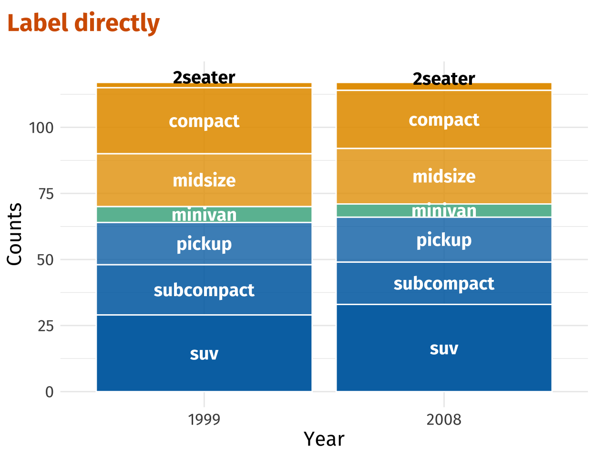
맺음 말
분석을 시작하며 혼자 가볍게 EDA를 하는 단계에서 본 예제와 같이 시각화를 개선해나가는 작업은 필요로 되지 않을겁니다. 오히려 시간 낭비일수도 있구요. 그러나, 내가 얻은 인사이트를 전달하는 자리 또는 데이터를 기반으로 누군가를 설득해야하는 자리에서는 이 글에서 제공하는 몇 가지 방법이 꽤나 도움이 될 것이라고 생각합니다. 물론, 전달하고자 하는 내용이 한 눈에 들어도록 시각화를 수행하는 작업은 의외로 쉬울 때도 있지만, 꽤나 까다로운 과정을 거쳐야하는 상황도 존재합니다. 실무에서는 이와는 또다른 예상치 못한 까다로운 문제들을 겪는 상황들이 있을 수도 있구요. 다만, 본 글에서 그림의 퀄리티를 단계단계 개선해나간 바와 같이 전달하고자 하는 내용을 명확히하고 충분한 시간을 숙고해 그림을 개선해 나간다면, 뭐든 해결할 수 있을 것이라고 봅니다. 하고자 하는 시각화를 구현하지 못해낸다고 하더라도 그 과정 속에서 배우는 것은 분명히 존재할 것입니다. 처음부터 완벽하게 아름다운 시각화를 해낼 수 있는 사람은 없다는 것을 기억하셨으면 합니다.😁
이번 포스팅을 준비하며 참고했던 글은 올해 봤던 데이터 시각화 관련 아티클 중 제게 가장 큰 임팩트를 주는 글이었습니다. 누구나 하는 평범한 시각화를 비범하게 만들어주는 글이라고 표현하면 적절할까요? 많은 사람들이 알았으면 하는 내용이라, 8월 서울 R 미트업에서 본 내용을 주제로 발표를 하기도 했습니다. 지금 이 글을 읽고 계신 여러분들에게도 좋은 인사이트를 줄 수 있는 글이 되었으면 합니다.